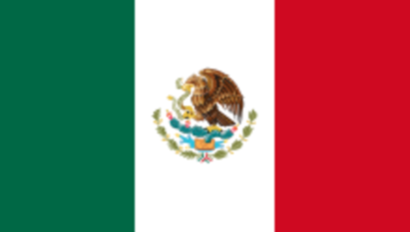

La gastronomie désigne l'art de préparer, de cuisiner et de savourer les aliments. Elle va bien au-delà de la simple nécessité de se nourrir, en intégrant des aspects culturels, historiques et sociaux. Chaque région du monde possède ses propres traditions culinaires, qui reflètent son patrimoine, ses ressources et ses savoir-faire. La gastronomie, en tant que pratique, permet de découvrir des saveurs uniques, tout en renforçant les liens sociaux et culturels à travers les repas partagés.
Parmi les gastronomies les mieux qualifiées mondialement on retrouve notamment:
| Classement mondial | Les meilleures gastronomies |
|---|---|
| 1 | Italie |
| 2 | Japon |
| 3 | France |
| 4 | Mexique  |
| 5 | Grèce |
La source des informations est:Google